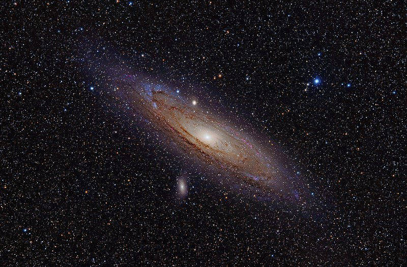

Rubrique scientifique
Dans environ 4,5 milliards d’années, la Voie lactée et la galaxie d’Andromède commenceront à fusionner pour à terme, ne former plus qu’une seule galaxie géante. Comment cela se déroulera et qu'est ce que cela engendrera dans notre galaxie ?
Située à 2,5 millions d’années-lumière du système solaire, la galaxie d’Andromède se dirige droit vers nous à une vitesse de 120 kilomètres par seconde. La Voie lactée va donc subir un choc frontal et fusionner avec cette galaxie. Bien que la fusion ait peut-être déjà commencé car les observations que nous faisons actuellement datent d’il y a 2,5 milliards d’années, cela n’aboutira pas à une destruction de notre galaxie ou de notre système solaire. En effet, malgré le grand nombre d’étoiles et d’astres que compte notre galaxie (200 milliards d’étoiles et au moins autant de planètes), elle est surtout, comme les autres, composée de vide. En clair, deux astres ont très peu de chance de se percuter lors de la fusion des deux galaxies. Plus précisément, deux d’entre eux ont autant de chance de se toucher que deux balles de pistolet tirées face à face à plusieurs kilomètres. En revanche, le système solaire aura une chance relativement grande (plus d’une chance sur deux pour certains chercheurs) d’être expulsé de la nouvelle galaxie et d'errer dans le vide de l’espace à 100000 années-lumière de son centre. En outre, la fusion des deux galaxies ne va pas durer un jour mais plutôt des centaines de millions voire des milliards d’années.
Andromède va dans un premier temps traverser la Voie lactée, ce qui va beaucoup réduire la vitesse des deux galaxies. En second lieu, les deux géantes vont se passer à travers de nouveau pour ensuite fusionner. Ainsi, les deux trous noirs supermassifs se trouvant en leur centre vont se tourner autour et finir par n’en former plus qu’un seul. La nouvelle galaxie formée portera (pour l’instant) le nom de "Milkomeda” (en français Lactomède) et, déformé par la gravité intense des collisions, elle aura une forme elliptique. En outre, nous allons pouvoir assister à la naissance de nombreuses étoiles, crées par la compression de plusieurs nébuleuses et nuages de gaz lors des collisions. Cela sera donc plutôt un vrai spectacle pour nos yeux que la fin du monde ! Cependant, il n’y a pas besoin d’attendre tout ce temps pour que la Voie Lactée absorbe une nouvelle galaxie car les chercheurs estiment que d’ici 2 à 3 milliards d’années, elle aura déjà englouti le Petit et le Grand Nuage de Magellan.
Cet article a été rédigé par Maxime Roulet, Alexandre Chateau, Alexandre Jano et Mickaël Dubreuil